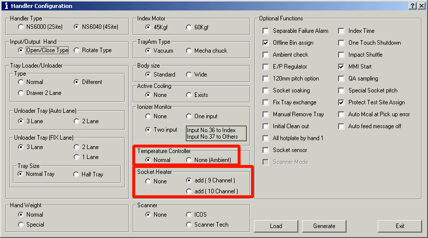

Service History
Subject: NS-6040 temperature configuration(config.exe) for socket heater
Handler Model: NS-6040
Controller: SRC520
Date: 16 Sep 2010
Q&A
Question
In NS6000 config.exe, after clicked "generate", "Yes", there is another window asking " Change temperature configuration file?"
click Yes or No?
If click yes, which temperature file will be change?

Ans
This is setting of available/ disable depending on socket heater presence.
[Socket Heater]
1. None
Available to use standard unit of temperature control.
2. Add 9 Channel
Normal type Heater block
3. Add 10 Channel
Blower Heater
Note: There is no any change of temperature offset data.
If you change socket heater option, click yes. if not, the option will not show in MMI when load in.
Remarks
RS232C-1 COM Port 1 of SRC520 link to Yamatake board for heater on/off.